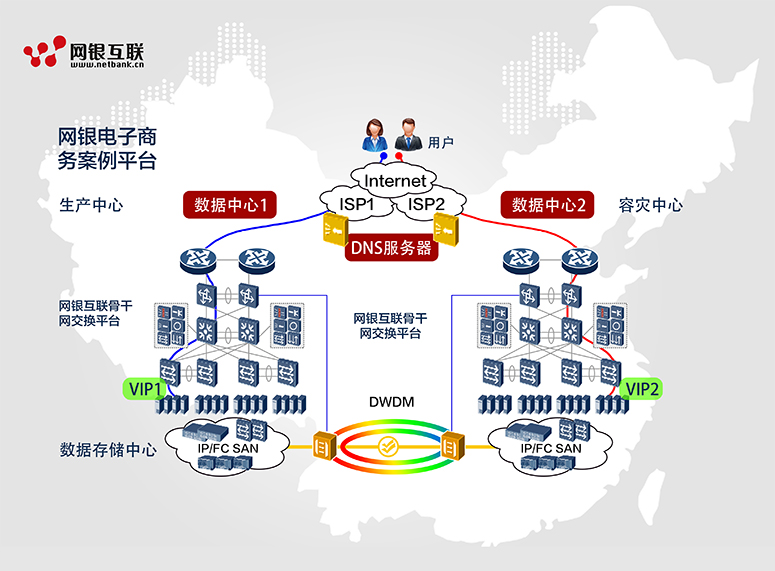
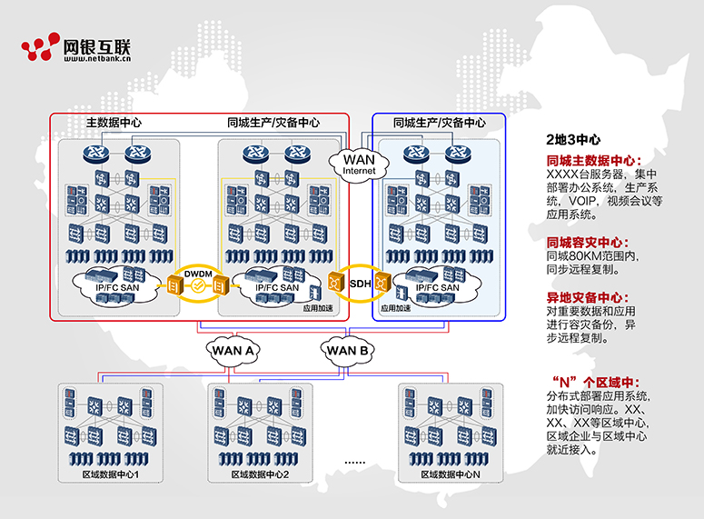
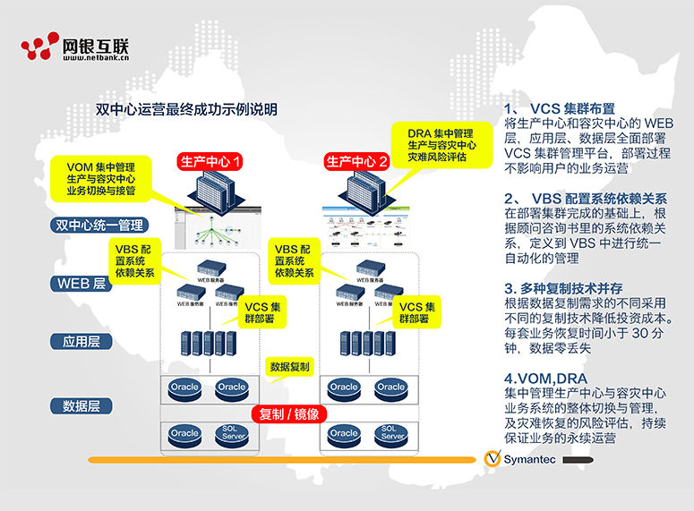
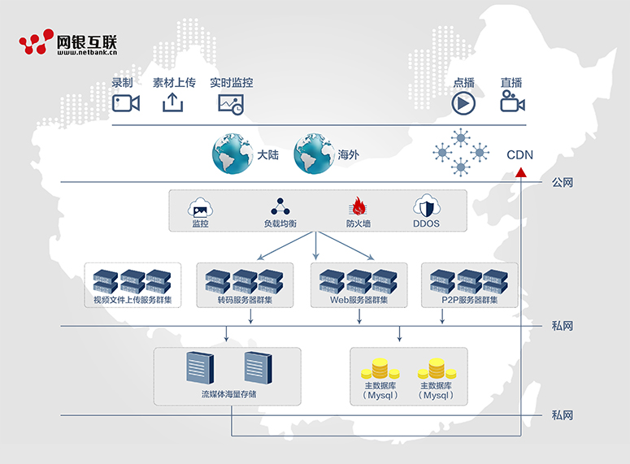
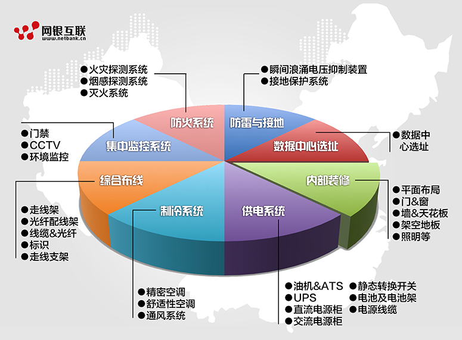
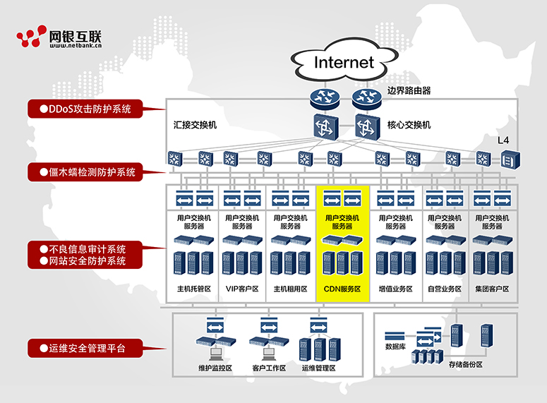
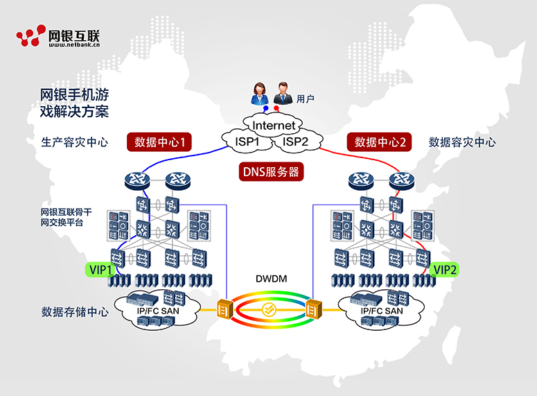
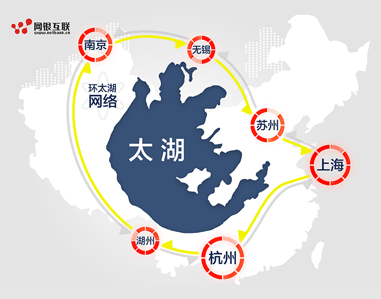
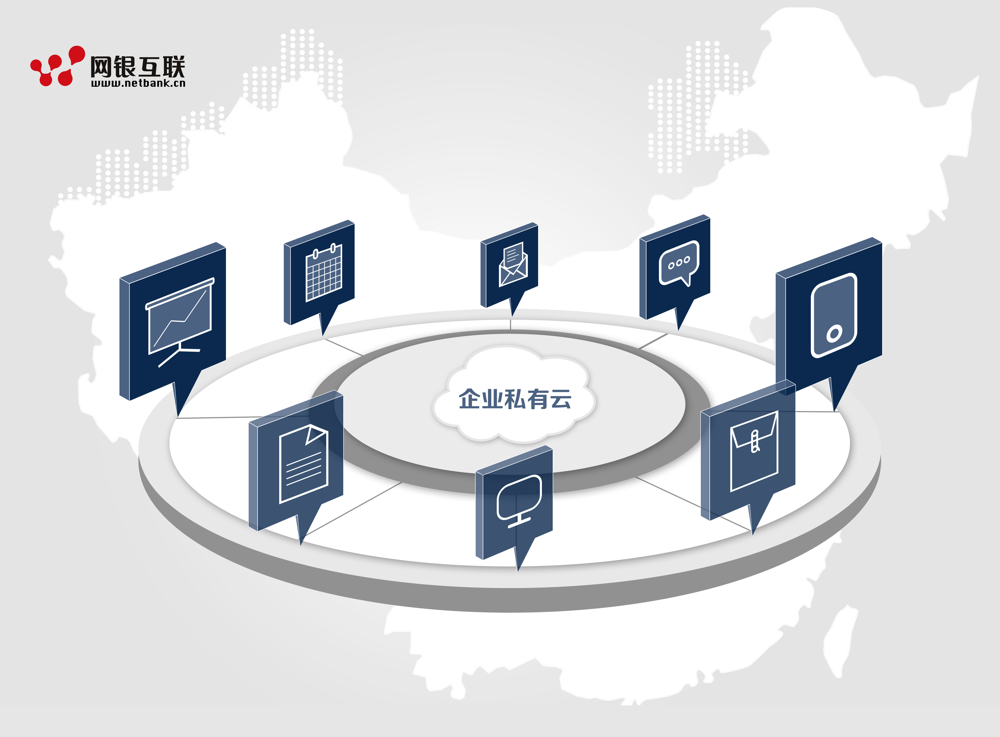

电子商务解决方案
随着电子商务行业竞争的加剧，电商网站的体验已经成为影响消费者购买决定的重要因素之一，电子商务企业网站的建设遭遇诸多挑战。
解决方案：
网银互联充分了解电子商务行业的发展趋势以及企业需求，结合领先的核心技术和丰富的资源优势，提出了最佳的电子商务IDC解决方案“BGP+分布式+传输网”。
网银互联为电商的核心数据库访问提供BGP解决方案，BGP可以实现一点接入，全网覆盖，保证不同网络运营商用户的高速访问，是目前互联互通最佳解决方案。BGP解决方案能够使电商的核心业务数据快速交互，提高网络服务品质，提升用户满意度。
针对电商网站用户访问量大，用户覆盖地域广，对网络带宽、性能要求高的特点，网银互联提供分布式解决方案。科学部署，有的放矢，精准解决用户区域覆盖不全、用户体验不均衡等问题，用户可就近访问，迅速提升各区域用户体验。以二三级城市资源成本优势，及网银互联规模采购优势，分布式部署解决方案可以有效降低电商的IDC部署总成本，以最优成本获取最佳网络资源。
网银互联提供数据中心之间传输网解决方案，传输网实现数据高效传递、海量数据同步。网银互联的机房规模和传输网资源，可以帮助电商企业快速部署灾备中心，并降低数据复制和同步的成本。
公有云、数据中心高速互联解决方案
公有云通常指第三方提供商为用户提供的能够使用的云。公有云一般可通过internet使用，可以在整个开放的公有网络中提供服务。企业通过自己的基础设施直接向外部用户提供服务。外部用户通过互联网访问服务。
网银互联为公有云提供最可最安全、最专业的数据存储中心，用户不用再担心数据丢失、病毒入侵等麻烦，还可以部署很多数据中心和冗余系统。在此过程中，可自动帮用户完成软硬件升级和数据安全备份。
多数据中心高速互联，即是通过网络将不同地域的数据中心连接起来，对云计算用户呈现为一个逻辑上统一的超级云数据中心，实现数据中心之间资源的整合、池化和调度。
相比于单个数据中心空间、电力不足等问题，数据中心高速互联具有极大的优势：多数据中心不间断的维护和业务整合，增强其可维护性；数据中心业务部署更为方便，保障业务的弹性扩展；各数据中心间可实现跨地域容灾备份，业务高峰时可将私有云上的部分业务迁移到公有云上，转移企业DC灾难。
数据中心间网络可以选择：裸光纤、专租用运营商MPLS/IP网络、城域承载网、Internet或者自建WAN等。根据选择的网络不同，匹配相应的互联技术。例如，自建WAN或者裸光纤网络的可扩展性和灵活性较强，互联技术选择广泛；租用运营商的MPLS/IP网络，建议同时租用运营商的VPN业务（VPLS\MPLS L3VPN\GRE VPN等）。此外，还有多种方式可以组合使用，如同城数据中心采用裸光纤或者自建WAN，异地采用租用运营商MPLS/IP网络，分支机构采用Internet等。
两地三中心灾备解决方案
随着企业的商业活动越来越依赖于网络，越来越多的企业在寻找一种强大的数据中心架构，这种高可用的结构能够减少甚至消除正常和非正常的停机对业务可用性造成的影响。这意味着无论是否有中断，关键任务应用系统都能够不间断地创造产值并提高公司的业务持续性底线。
用户建立多个数据中心来承载业务系统的主要目的是为了实现应用的高可用性，因此根据数据中心之间的关系，网银互联通常将数据中心分为以下三个类型：
-
主数据中心——灾备数据中心，
-
双运营数据中心
-
双活数据中心主数据中心——灾备数据中心：
在这种工作模式下，用户所有的业务系统在主数据中心中运行，而灾备数据中心为业务系统提供冷备或热备。当主数据中心的应用出现故障时，可以将单个应用或者数据中心整体切换到灾备数据中心。
双运营数据中心在这种工作模式下，用的一部分应用在第一个数据中心运行，另一部分应用在第二个数据中心运行，同时两个数据中心实现应用的互备，当某个应用出现故障时，由对应的备份数据中心应用接管服务。
双活数据中心在这种工作模式下，用户所有的业务系统同时在两个数据中心运行，同时为用户提供服务，当某个数据中心的应用系统出现问题时，有另一个数据中心的应用来持续的提供服务。
视频应用解决方案
目前国内多数的网络视频网站都采用集中式管理模式，随着用户的增多，访问量的增大，问题层出不穷：
点播加大服务器的负载并会消耗巨大的带宽资源，为缓解内容集中放置带来的压力，运营商会投入大量的硬件和带宽资源成本，但仍无法解决根本问题；
用户群体分布广泛，网络视频对整个的网络传输环节有很高的要求，现有网络构架及中国互联网络的复杂性，无法保证终端用户访问源站时的高品质网络服务；
优秀视频作品带来广告效应的同时，给网站带来的突发流量问题的急待解决；
网络安全问题不容忽视，视频网站一旦遭受攻击，集中式管理方式下会影响到全局用户的访问，降低了客户服务品质的同时，直接影响到视频网站的经济效益；
网银互联流媒体直播加速服务，是将源站采用广播方式通过网络为用户提供实时采集的视频流通过良好的链路发布到DnionCDN中心网络中，中心网络对直流再进行分层分发。每一路分发的流都通过完备的链路到达位于网络边缘的流媒体服务器机群中，通过流媒体服务器集群为终端用户提供稳定可靠的直播服务。
此外，技术上使用音视频转码，可以将视频转成需要的尺寸和格式，和播放端相结合，不同设备可以使用对应尺寸的视频进行播放，并支持自适应流媒体播放，在不同网络环境下根据网络状况进行普清、标清、高清的切换，保证用户的观看流畅。
数据中心定制解决方案
“面向服务的下一代绿色数据中心”是网银互联全面集合自身优势资源，贴合客户需求，基于业务视角开发的端到端数据中心综合解决方案。
网银互联基于先进的模块化设计理念，采用全方位的绿色节能技术，提供从设计到交付的全系列数据中心机房建设方案。
方案分为以下主要方面：
-
前期咨询：方案咨询、项目规划与设计服务
-
中期建设：机房建设、IT架构集成、业务开发和综合运营管理平台建设服务
-
后期运维：专业维保服务，长期战略性业务创新合作
定制机房建设特点：
空间、电力、制冷、IT等模块化建设保证数据中心资源的供需平衡，可满足动态业务需要、降低初始投资、避免资源浪费和缩短建设周期与业界知名厂商深入合作，提供优秀的实施方案，全面的绿色节能技术和产品，可充分提高机房制冷和能耗利用效率、降低能源消耗；有效支撑高密、云计算、综合运用等上层方案实施机柜系统、服务器、存储、网络、安全在内，全系列成熟、可定制的及相关产品，可大幅降低采购和集成建设成本。全面遵守数据中心节能准则CoC、IEC 61903 IT和通信设备能效标准、TIA-942机房建设标准、ISO/IEC IS11801综合布线标准、NFPA-75消防系统标准和GB6650-86活动地板等主流国际或行业标准，使您的机房系统更加灵活、开放且便于维护、扩展。
此外，网银定制机房解决方案还通过先进的机房热管理技术和低能耗的IT产品应用，充分利用芯片级、单板级、机柜级和机房级全方位节能技术，可以解决数据中心面临的高能耗问题，有效降低TCO，为您构建绿色数据中心。
双活数据中心解决方案
在双活数据中心工作模式下，用户所有的业务系统同时在两个数据中心运行，同时为用户提供服务，当某个数据中心的应用系统出现问题时，有另一个数据中心的应用来持续的提供服务。
双活数据中心最大的特点是：
-
充分利用资源，避免了一个数据中心常年处于闲置状态而造成浪费。通过资源整合，双活数据中心的服务能力是双倍的。
-
双活数据中心如果断了一个数据中心，另外一个数据中心还在运行，对用户来说是不可感知的。
网银IDC运维解决方案
数据中心是当前运营商和各行业的IT建设重点。运营商、大型企业、金融证券、政府、能源、电力、交通、教育、制造业、网站和电子商务公司等正在进行或已完成数据中心建设，通过数据中心的建设，实现对IT信息系统的整合和集中管理，提升内部的运营和管理效率以及对外的服务水平，同时降低IT建设的TCO。
网银长期致力于IDC运维服务，公司的IDC数据中心依托各大运营商骨干网得天独厚的网络资源优势，提供以主机租用、主机托管、虚拟主机业务为主的信息服务的统一品牌，为各大、中、小型企事业单位及ICP用户提供电信级网络信息平台。公司IDC数据中心以其设施一流的电信级标准机房、高速稳定的接入带宽、强大迅速的技术支撑、安全稳定的保障措施、贴心全面的优质服务而成为华东地区处于领先地位的主机托管网络服务中心。同时，公司凭借IDC数据中心多年的系统建设及网络安全经验，为广大客户提供优异的IT外包服务和系统安全服务。
网银互联运维体系主要有以下几点：提升信息化的效益，降低信息化的风险，支持领导宏观决策，提升信息化科学管理水平，系统了解用户对服务的需求和规范了解用户使用服务的行为，提升IT服务质量和服务感知。主动监控和预防信息故障发生，提升工作人员的专业化水平和能力建设。
网银IDC优势
（一）安全性好
明确不同网络区域之间的安全关系，可以单独对每个区域进行安全实施，不会对其它区域造成影响。
（二）扩展性好
可根据不同区域和层次的功能按需建设，业务部署灵活，可以非常方便的增加新 Server Farm区，而不改变原有的网络结构。
（三）提高可用性
可以最大限度的隔离故障域，简化数据路径，加快故障收敛时间。
（四）易管理
网络结构清晰，日常的运维变得更加简单，问题定位容易。
（五）网银IDC数据中心高可用解决方案
随着市场竞争的日益加剧，客户对信息系统的依赖性和要求越来越高，保证数据中心的高可用性，提供7×24小时网络服务成为建网的首要目标，也是数据中心建设关注的第一要素。
（六）网络故障的原因主要有两类：
1、不可控因素，如自然灾害、战争、大停电、人为破坏等、通过建设生产中心、本地备份中心、异地容灾中心，即“两地三中心”模式，通过良好的整体规划设计，保证不可控因素影响下数据中心的高可用。
2、可控因素，如设备故障、链路故障、网络拥塞、维护误操作、恶意攻击等。
网银互联在相关产品设计上考虑了诸多因素，提供了全系列的解决方案，包括物理设备、链路层、IP层、传输层和应用层，全方位的提高网络可用性。
-
硬件设备冗余，如设备双主控、单板热插拔、冗余电源、冗余风扇。
-
物理链路冗余，如以太网链路聚合等。
-
冗余技术，如：ERPS、RRPP等环网技术。
-
二层路径冗余，如：MSTP。
-
三层路径冗余，如：VRRP、ECMP、动态路由快速收敛。
-
快速故障检测技术，如：BFD，Track等。
（七）除了产品高可用性外，网银在数据中心整体设计上提供完整的高可用方案，具体可分为三种。
-
、服务器接入高可用设计
-
服务器多网卡接入，简称bond技术。为了实现接入高可用，服务器通常采用多链路上行，即服务器的两块甚至多网卡接入，服务器中的网络驱动程序将两块或者多块网卡捆绑成一个虚拟的网卡，如果一个网卡失效，另一个网卡会接管它的MAC地址，两块网卡使用一个IP地址，而且必须位于同一广播域，即同一子网下，这种方式可以实现服务器的高可靠接入。
-
接入层到汇聚的高可用设计 接入与汇聚采用MSTP+VRRP：提高可用性，还可以做到链路的负载均衡。 汇聚层和核心的高可用设计。
网银现有的核心设备CISCO H3C 华为 锐捷 juniper都采用VSS,IRF,CSS,VSU等交换虚拟化技术实现高可靠性，节约管理成本，有效提高带宽和安全性。
网站合规系统解决方案
网银互联为客户提供备案服务，相应流程如下：
首先需要在我司备案网站\上提交备案信息，(先注册 ,邀请码请向备案QQ:800017123获取。)
在备案网站提交信息后，请网站负责人：个人备案带域名证书、二代身份证原件；企业携带营业执照副本原件、公章、域名证书、法人身份证复印件、二代身份证原件到我司拍照核验，或者将所有备案材料准备好邮寄我司。
拍照核验和备案材料邮寄地址：(备案专员收电话：4008835999)
中国杭州市西湖区华星路96号互联网金融大厦20层上海客户拍照地址——上海分公司地址: (前台—王露 电话：021-52124880) 上海市虹口区四川北路1318号1806室 广州客户拍照地址——广州分公司地址：(前台-卢少冰电话020-22057968传真：020-22057858) 广州市天河区林和西路9号耀中广场>B座807
备案所需提交材料： （企业备案）
- 企业：工商营业执照副本复印件（加盖公章）
- 网站负责人本人二代身份证复印件（加盖公章）
- 、网站备案委托书（加盖公章）（仅网站负责人非法定代表人时需要） （见材料下载）
- 法人身证复印件（加盖公章）
- 域名证书复印件（加盖公章）
- 信息安全承诺书（加盖公章）（见材料下载）
- 互联网信息服务备案登记表（加盖公章）（仅网站接入时需要）（见材料下载）
- 网站负责人特定背景的彩色免冠照（800X600像素，照片上需显示有拍照时间，若以前在我司进行过拍照核验可不提供），（背景布请按我司提供的图片样式制作出来后拍照。背景布见材料下载）
- 、真实核验单原件2份（见材料下载），表格打印在A4纸上（需网站负责人签字，加盖公章）
- 快递材料寄送至管局审核的快递费需客户承担。
注:重庆、新疆、湖北、辽宁、云南、湖南材料需提供双份 云南、辽宁需要互联网信息登记表，信息安全协议需要我司盖章 重庆、湖北、浙江信息安全协议需要我司盖章且需要将备案照片冲印出来提供我司（个人备案）
注意：江西省备案客户需要在材料上按手印:
- 本人二代身份证复印件（需在复印件上签字）
- 域名证书复印件
- 信息安全承诺书（签字）（见材料下载）
- 互联网信息服务备案登记表（签字）（网站接入时需要）（见材料下载）
- 特定背景的彩色免冠照（800X600像素，照片上需显示有拍照时间，若以前在我司进行过拍照核验可不提供），（背景布请按我司提供的图片样式制作出来后拍照。背景布见材料下载）
- 真实核验单原件2份（见材料下载），表格打印在A4纸上（需网站负责人签字）
- 快递材料寄送至管局审核的快递费需客户承担。
注：重庆、新疆、湖北、辽宁、云南、湖南材料需提供双份，其中重庆、新疆、湖北、辽宁、云南、湖南、浙江需要洗出备案照片给我司
游戏应用解决方案
随着3G、4G高速网络的发展，智能终端的不断创新，手机游戏已经成为移动互联网时代的吸金石，众多因素导致越来越多的公司进入手机游戏研发和运营行列，在爆发式发展的同时也呈现出比较多的困难和挑战。
-
玩家的网络响应，下载速度过慢，带宽压力巨大，服务器负载过重
-
数据传输频繁，要求网速快，稳定性要求比较高
-
较早出现网络瓶颈，无法满足因用户数量快速增加而导致的网络扩展
-
数据的安全性和可靠性
-
爆发式的增长导致对业务发展的预估不足，无法对网络资源进行冗余分配，直接导致客户的体验度下降，间接影响游戏营收
-
突发的下载流量，负载均衡，冗余规划
解决方案：
（附图）
手机游戏“四高”需求：
- 高稳定性
- 高速网络
- 高安全性
- 高扩展性
网银互联提供最优的“BGP+分布式+传输网+海外部署”全网结构的IDC解决方案
BGP可以实现一点接入全网覆盖，保证不同网络运营商用户的高速访问，是目前国内互联互通最佳解决方案，提高网络服务品质，提升用户满意度。分布式解决方案可精准解决用户区域覆盖不全、用户体验不均衡等问题，用户可就近访问，迅速提升各区域用户体验，解决下载资源服务器群问题，有效降低手机游戏厂商的IDC部署总成本，以最优成本获取最佳网络资源传输网实现数据高效传递、海量数据同步，通过内部传输通道对认证服务、收费服务、数据库服务形成生产、灾备双冗余网络结构，进一步提高安全性和稳定性，并降低数据复制和同步的成本。
海外VPN部署可实现“国内部署，国外运营”的海外市场需求，可在国内部署海外用户服务器群组，让数据进一步集中处理，提高动态数据的处理能力，满足海外玩家更优的网络体验
IDS入侵检测解决方案
网络入侵者在实施入侵或攻击时，往往同时采取多种入侵的手段，以保证入侵的成功机率。而这些威胁会对企业造成巨大损失。对于上述威胁，传统防火墙和防病毒系统都无法有效地检测。为了弥补防火墙的不足，我们需要利用入侵检测技术，实时监控网络资源，精确识别各种入侵攻击，防止入侵造成的损害。在检测到入侵攻击时，通过及时报警、动态防护，来减少入侵带来的损失。
2015年网银互联入侵检测系统上市，系统定位于智能威胁检测、分析与管理。威胁管理涉及：
- 威胁发现
- 威胁展示
- 威胁分析
- 威胁处理
网银互联IDS入侵检测系统部署在网络结构边缘（数据流的关键出入口），通过实时侦听网络数据流，寻找网络违规模式和未授权的网络访问尝试。发现网络潜在风险或不安全访问行为时，网络监控系统能够根据系统安全策略做出反应，包括实时报警、限时登录，或执行用户自定义的安全策略等。
部署结构图：
（附图）
主要功能：
-
网络攻击探测 主要探测的攻击类型有TCP Flood , UDP Flood，SYN Flood，DNS Query Flood，IP Spoofing，Fraggle等。同时通过策略编辑器中的用户自定义功能定制针对网络中各种TCP/IP协议的网络事件监控。
-
探测及欺骗攻击 能够很好的防范各种SNA类型和应用层的预探测攻击行为。主要防范的攻击类型有TCP SYN Scan TCP ACK Scan, Ping Sweep, TCP FIN Scan等。
-
应用层防护 内置专业的Web应用攻击检测引擎。采用先进的协议分析检测引擎，通过优化机制，能够快速处理应用数据，准确发现各种攻击行为。
环太湖网络和BGP互联解决方案
随着IT互联网络的迅速发展，互联网的体验和服务器托管成为普遍的应用。优化传输网络，优化用户上网体验，成为网络优化的关键点。建设IDC数据中心各自的传输网络和BGP小运营商互通，成为各自网络节点互通的关键点。
网银互联首选建设长三角环太湖网络，建设IDC小规模联盟。部署结构图：网银互联将以杭州、湖州、南京、镇江、常州、无锡、苏州、上海、嘉兴、宁波，10个城市作为环太湖网络重要城市，实现IDC的内部传输网络的在各地地市之间互通。。此方案将设计环网带宽容量16路10G，双向各为160G，平均延时将缩减到每100KM增加2ms。针对客户二层网络将采用IDC双活和同步传输线路实现高效传输，小规模运营商之间使用BGP协议互联。BGP协议互联后，网络运营商的所有骨干路由设备将会判断到IDC机房IP段的最佳路由，以保证不同网络运营商用户的高速访问。
私有云解决方案
网银互联私有云，倾向独立型客户构建专用的IT数据中心，从而对数据的安全性、服务质量提供更高保障；其次，减少传统业务应用短板造成基础设施资源浪费，充分利用增强的工业标准硬件和软件，在提高可用性的同时，最大程度的控制成本增加。网银互联私有云可部署在企业数据中心的防火墙内，或部署在一个安全的主机托管场所。
